ProtoMS is a powerful simulation program that is capable of being used in many different ways. ProtoMS was originally designed to perform Monte Carlo free energy calculations on protein-ligand systems, so a lot of the terminology and ideas associated with ProtoMS derive from protein-ligand Monte Carlo methodology. While the code was originally designed with this use in mind, the framework is sufficiently flexible to allow the study of a wide range of different systems, using a wide range of simulation methodology.
At the core of ProtoMS are four central concepts;
ProtoMS divides all of the molecules loaded within a system into solvents, GCsolutes, solutes and proteins
Solvents
Solvents are loaded into ProtoMS from PDB files (see section Solvent File). Each solvent molecule is identified by its residue name (the fourth column in the PDB file), e.g. ProtoMS identifies the TIP4P solvent with the residue name ‘T4P’. ProtoMS loads the coordinates of the solvent from the PDB file, and then assigns the parameters for the solvent from a solvent template (see section Templates). The solvent template contains the information necessary to identify all of the atoms in the solvent molecule and to assign forcefield parameters to each atom. Note that this version of ProtoMS uses the coordinates of the solvent molecule that are present in the PDB file. ProtoMS does not yet have the capability to modify these coordinates to ensure that the internal geometry of the solvent is correct for the solvent model. This means that as solvents are only translated and rotated, the internal geometry of the solvent molecule loaded at the start of the simulation will be identical to that at the end of the simulation.
GCSolutes
Like solvents, GCsolutes are loaded into ProtoMS from PDB files (see section GCsolute File). Each GCsolute molecule is identified by its residue name (the fourth column in the PDB file). ProtoMS loads the coordinates of the GCsolute from the PDB file, and then assigns the parameters for the GCsolute from a GCsolute template (see section Templates). This template contains the information necessary to identify all of the atoms in the solvent molecule and to assign forcefield parameters to each atom. Alongside translational and rotational moves, the intermolecular energy between the GCsolute and the system can be sampled.
Solutes
Solutes are also loaded into ProtoMS from PDB files (see section Solute File). Each solute molecule is identified by its solute name, which is given in the HEADER record of the PDB file. ProtoMS obtains the coordinates of the solute from the PDB file, and will then find a solute template that matches this solute name (see Templates). The solute template is used to build the z-matrix for the solute, and to assign all of the forcefield parameters. The solute template is also used to assign the connectivity of the solute and to define the flexible internal coordinates. The solute molecule is constructed using the z-matrix, with the reference being three automatically added dummy atoms, called ‘DM1’, ‘DM2’ and ‘DM3’, all part of residue ‘DUM’. These dummy atoms are automatically added by ProtoMS at the geometric center of the solute, as a right angled set of atoms pointing along the major and minor axes of the solute.
Proteins Proteins are loaded into ProtoMS via PDB files (see section Protein File). Each PDB file may only contain a single protein chain. ProtoMS constructs the linear chain of molecules based on the order of residues that it reads from the PDB file, and will ignore the residue number read from the PDB file. This means that you must ensure that you have the residues ordered correctly within the PDB file. ProtoMS assigns to each residue both a chain template (see section Templates), that describes the backbone of the residue, and a residue template (see section Templates), that describes the sidechain. The residue template is located based on the name of the residue given in the fourth column in the PDB file (e.g. ‘ASP’ or ‘HIS’). The chain template is located based on the chain template associated with the residue template for the position of the residue within the chain. For example, residue ‘ASP’ has a standard amino acid backbone chain template if this residue was in the middle of the chain, an NH+ capped backbone chain template 3 if this was the first residue of the chain (and thus at the n-terminus), and a CO– capped backbone chain template 2 if this were the last residue of the chain (and thus at the c-terminus). If the protein consisted of only one residue, then the zwitterionic amino acid chain template would be used for ‘ASP’.
ProtoMS obtains the coordinates of each residue from the PDB file, and will then use the residue and chain templates to build the z-matrix for each residue, and to assign all of the forcefield parameters.
Proteins are moved in a different manner in ProtoMS compared to other Monte Carlo packages that are available. Each residue is moved independently, using both the internal geometry moves defined by the template z-matrix, and by backbone translation and rotation moves of the chain atoms (see figure above).
Four atoms from each protein residue are designated as backbone atoms (bbatoms). For most residues these atoms are the N, CA, C and O atoms respectively. The four backbone atoms for two neighbouring residues are shown above. The protein backbone move moves the last three bbatoms of one residue and the first bbatom of the next residue. This is because the moves assumes that these four bbatoms form a rigid triangle (as is shown by the grey lines). The four atoms are translated and rotated as a rigid triangle, with the origin of rotation of the triangle centered on the intersection of the vector between bbatoms 2 and 1, and the vector between bbatoms 3 and 4 (marked as a red dot directly above the C=O bond). Because this triangle is translated and rotated as a rigid unit, all atoms connected to the atoms of this triangle will also be translated and rotated as a rigid unit.
Four special backbone atoms (bbatoms) are identified in the chain-backbone of each residue. These atoms form the reference from which the rest of the residue atoms are built. These four atoms can be translated and rotated as a rigid unit via protein backbone moves (see figure above). As the rest of the residue is constructed from these bbatoms, the rest of the residue is thus also translated and rotated. Because the bbatoms are translated and rotated as a rigid unit, the internal geometry of these backbone atoms are held constant throughout the simulation. This means that the internal geometry of the bbatoms is taken from the PDB file, and may not be modified by the chain or residue templates. It is also not possible to build missing bbatoms, so they must all be present in the PDB file.
Once the coordinates and z-matrices of each residue have been assigned, interresidue bonds are added between the first bbatom of each residue and the third bbatom of the previous residue (e.g. for ‘ASP’, bonds would be added from the ‘N’ atom of the ‘ASP’ residue to the ‘C’ atom of the preceeding amino acid residue). If the length of this bond is less than 4 A then this bond is added as a real bond, and its energy is evaluated as part of the forcefield. However, if the length is greater than 4 A, then this bond will be added as a dummy bond, and a warning message output. This is useful in cases where you wish to load up a protein scoop, e.g. from around the active site. This option should be used with care in conjunction with backbone moves.
| Parameter | Description | Values |
|---|---|---|
| MAXPROTEINS | Maximum number of proteins | 3 |
| MAXRESIDUES | Maximum number of residues per protein | 1000 |
| MAXSCATOMS | Maximum number of atoms per protein residue | 30 |
| MAXSOLUTES | Maximum number of solutes | 60 |
| MAXSOLUTERESIDUES | Maximum number of residues per solute | 10 |
| MAXSOLUTEATOMSPERRESIDUE | Maximum number of solute atoms per residue | 100 |
| MAXSOLVENTS | Maximum number of solvent molecules | 75000 |
| MAXSOLVENTS | Maximum number of GCsolute molecules | 75000 |
| MAXSOLVENTATOMS | Maximum number of atoms per solvent | 10 |
Limits
ProtoMS is written using slightly extended Fortran 77 (see Programming Language). This means that the maximum numbers of loaded proteins, solutes and solvents has to be set at compile time. Table 1.0 gives the default values for the maximum number of proteins, solutes and solvents. Please note that you may change these numbers to fit the system that you are interested in, e.g. if you were investigating a single protein in a lipid bilayer then you may choose to model the lipid as a solute (thus requiring a large increase in the number of solute molecules, but a decrease in the number of solute residues), and you could reduce the maximum number of protein molecules to one. By balancing the numbers of protein, solutes and solvents you should find that you are able to load up the system that you want to simulate.
ProtoMS was designed to perform simulations using a range of different molecular mechanics (MM) forcefields. To achieve this aim, a generic forcefield has been implemented, and this can be specialised into a specific, traditional forcefield.
The forcefield in ProtoMS is comprised of several terms;
Intermolecular Potential
An intermolecular potential acts between all molecules within the system. The intermolecular potential between a pair of molecules, A and B, 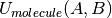, with A consisting of atoms and B consisting of atoms, is formed as the sum of the non-bonded potential, 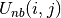 between each pair of atom sites, i and j, between the two molecules, scaled by a constant, scl, e.g.
(1)
where R is the shortest distance between a pair of atom sites between the molecules. The scaling factor is set according to
where 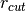 and 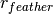 are the non-bonded cutoff and feather parameters.
The non-bonded potential between the pair of atoms is evaluated as the sum of the Coulombic and Lennard-Jones (LJ) potentials between the atoms,
(2)
where 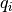 and 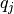 are the partial charges on the two atom sites, r(i, j) is the distance between the atom sites, 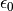 is the permittivity of free space and 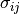 and 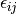 are the Lennard Jones parameters for the atom site pair i and j. The LJ parameters for an atom site pair are calculated as the average of the LJ parameters for the same site pair.
Either the arithmetic average is used, or the geometric average is used, e.g.
(3)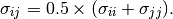
(4)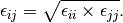
The AMBER family of forcefields use the arithmetic average for  , and the geometric average for
, and the geometric average for  , while the OPLS family of forcefields use the geometric average for both parameters. The intermolecular potential is formed as the sum of the non-bonded potential over all pairs of atom sites. It should be noted that an atom site does not necessarily need to lie at the center of each atom, and it may lie between atoms, or at the location of any lone pairs. Individual atoms may possess many atom sites, or even no atom sites.
, while the OPLS family of forcefields use the geometric average for both parameters. The intermolecular potential is formed as the sum of the non-bonded potential over all pairs of atom sites. It should be noted that an atom site does not necessarily need to lie at the center of each atom, and it may lie between atoms, or at the location of any lone pairs. Individual atoms may possess many atom sites, or even no atom sites.
Bond Potential
A bond potential acts over all of the explicitly added, non-dummy bonds within a molecule. ProtoMS makes no attempt to find any implicit bonds within a molecule, and it is not possible to add a bond between atoms of different molecules. The energy of each bond, 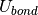 , is evaluated according to
(5)
where r is the bond length, 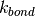 is the force constant for the bond, and  is the equilibrium bond length. The total bond energy of a molecule is the sum of the bond energies for all of the bonds within the molecule, and the total bond energy of the system is the sum of the bond energies for each of the molecules in the system.
is the equilibrium bond length. The total bond energy of a molecule is the sum of the bond energies for all of the bonds within the molecule, and the total bond energy of the system is the sum of the bond energies for each of the molecules in the system.
Angle Potential
An angle potential acts over all angles between atoms that are connected by non-dummy bonds, and over all non-dummy angles that have been explicitly added to the molecule. The energy of each angle, Uangle , is evaluated according to
(6)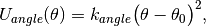
where  is the size of the angle, 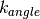 is the force constant for the angle, and 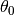 is the equilibrium angle size. The total angle energy of a molecule is the sum of the angle energies for each of the angles within the molecule, and the total energy of the system is the sum of the angle energies for each of the molecules in the system.
is the size of the angle, 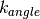 is the force constant for the angle, and 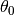 is the equilibrium angle size. The total angle energy of a molecule is the sum of the angle energies for each of the angles within the molecule, and the total energy of the system is the sum of the angle energies for each of the molecules in the system.
Urey-Bradley Potential
A Urey-Bradley potential may act between the first and third atoms of some of the angles that are evaluated for the angle potential. If this is the case, then a Urey-Bradley energy is added onto the angle energy. The Urey-Bradley energy, 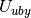, is evaluated according to
(7)
where x is the distance between the first and third atoms, is the Urey-Bradley force constant, and  is the equilibrium distance.
is the equilibrium distance.
Dihedral Potential
A dihedral potential acts over all dihedrals between atoms that are connected by non-dummy bonds, and over all non-dummy dihedrals that have been explicitly added to the molecule. Such explicitly added dihedrals may be used to add improper dihedrals that maintain the stereochemistry of chiral centers. The energy for each dihedral, 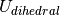, is formed as the sum of n cosine terms,
(8)
where 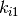 to 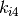 are dihedral parameters and  is the size of the dihedral. The total dihedral energy of a molecule is the sum of the dihedral energies for each of the dihedrals in the molecule, and the total dihedral energy of the system is the sum of the dihedral energies of each of the molecules.
is the size of the dihedral. The total dihedral energy of a molecule is the sum of the dihedral energies for each of the dihedrals in the molecule, and the total dihedral energy of the system is the sum of the dihedral energies of each of the molecules.
Intramolecular non-bonded Potential
An intramolecular non-bonded potential acts between all intramolecular pairs of atoms that are either not connected by a non-dummy bond, or are not both connected to a third atom by a non-dummy bond. To make this more clear, if two atoms are connected by a non-dummy bond then they are said to be 1-2 bonded. If two atoms are both connected to a third atom by non-dummy bonds, then they are said to 1-?-3, or 1-3 bonded. Similarly, if the pair of atoms are connected together via two atoms via non-dummy bonds, then they are said to be 1-?-?-4, or 1-4 bonded. An intramolecular non-bonded potential does not act over 1-2 or 1-3 bonded pairs within a molecule, but does act over 1-4 bonded pairs and above. Note that ProtoMS only looks at the non-dummy bonds between atoms, and will not consider whether or not there are non-dummy angles, Urey-Bradley or dihedral terms involving these atoms.
The intramolecular non-bonded potential of a molecule, 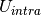 is the sum of the non-bonded energy between all 1-5 and above pairs of atoms within the molecule, plus the sum of the non-bonded energy between all 1-4 atoms scaled by a 1-4 scaling factor, e.g.
(9)
where
(10)
and
(11)
Equations (10) and (11) are the Coulomb and Lennard Jones equations, as seen in the intermolecular potential in equations (1) and (2). 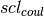 and 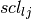 are the Coulomb and Lennard Jones scaling factors.
Generalized Born Surface Area potential
While free energy simulations are usually conducted in explicit solvent, ProtoMS supports Generalized Born Surface Area (GBSA) implicit solvent models. Relatively few free energy implicit solvent studies have been conducted and such option should be tested carefully before embarking onto expensive free energy simulations. The GBSA theory assumes that the total solvation free energy of a molecule A is a sum of a polar and non-polar energy term:
(12)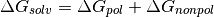
The second term, is simply proportional to the solvent accessible surface area (SASA) of the molecule, times a parameter that depends on the atom types present in the molecule. The first term is more complex and derived from the following equation :
(13)
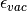 and are the dielectric constants of the vacuum and the solvent respectively,  the atomic partial charge of atom i, 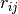 the distance between a pair of atoms ij, and 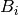 is the effective Born radius of atom i.
the atomic partial charge of atom i, 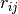 the distance between a pair of atoms ij, and 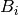 is the effective Born radius of atom i.
The effective Born Radius is in essence the spherically averaged distance of the solute atom to the solvent. An accurate estimate of this quantity is essential to calculate high quality solvation free energies. It is however fairly complex to compute as it formalyl involves an integral over the position of all the atoms in the system. While numerical techniques can calculate such value, they are too slow to be of practical use in a simulation. In ProtoMS, the effective Born radii are calculated using the Pairwise Descreening Approximation (PDA) method.
![{\frac{1}{B_i}} = \frac{1}{\alpha _{i}} - \frac{1}{2} \sum_{j \not= i} \lbrack \frac{1}{L_{ij}}-\frac{1}{U_{ij}}+\frac{r_{ij}}{4}(\frac{1}{U_{ij}^{2}}-\frac{1}{L_{ij}^{2}}) +\frac{1}{2r_{ij}}ln\frac{L_{ij}}{U_{ij}} + \frac{S_{j}^{2}\alpha_{j}^{2}}{4r_{ij}}(\frac{1}{L_{ij}^{2}}-\frac{1}{U_{ij}^{2}} ) \rbrack
L_{ij} &= 1 \quad if \quad r_{ij} + S_{j}\alpha_{j} \leq \alpha_{i} \\
L_{ij} &= \alpha_{i} \quad if \quad r_{ij} - S_{j}\alpha_{j} \leq \alpha_{i} <r_{ij} + S_{j}\alpha_{j}\\
L_{ij} &= r_{ij} - S_{j}\alpha_{j} \quad if \quad \alpha_{i} \leq r_{ij} - S_{j}\alpha_{j}\\
U_{ij} &= 1 \quad if \quad r_{ij} + S_{j}\alpha_{j} \leq \alpha_{j}\\
U_{ij} &= r_{ij} + S_{j}\alpha_{j} \quad if \quad \alpha{i} < r_{ij} + S_{j}\alpha_{j}\\](_images/math/4ffccaf8232fc061a2567212621cfa8ae539c4ab.png)
where is the distance between a pair of atoms ij and 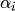 is the intrinsic Born radius of atom i, that is, the Born radius that atom i would adopt if it was completely isolated. Finally 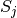 is a scaling factor which compensates for systematic errors introduced by this approximate Born radii calculation.
As the name says, the technique approximate the descreening (the extent to which a nearby atom j displaces a volume that would have otherwise been occupied by solvent) by a fast summation of pairwise terms. It is however not rigorous and has to be parameterised carefully to yield robust performance. The PDA method tend to systematically underestimate the Born radius of buried atoms because it incorrectly assign high dielectric constants to numerous small voids and crevices that exist between atoms in a protein and are not occupied by water. To increase accuracy, a re-scaling technique has been implemented.

where I is the summation term from the PDA calculation, 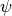,  ,
,  and
and  are parameters taken from the litterature.
are parameters taken from the litterature.
The rescaling option has not been used extensively in ProtoMS and should be used with caution. It appears it may prove useful when simulation buried protein binding sites.
The GBSA force field implemented in ProtoMS was parameterised to be used with the AMBER99 and the GAFF force fields. While alternative force fields could be used, a loss of accuracy could be expected.
GBSA simulations are order of magnitude more efficient than explicit solvent simulations of small isolated molecules. However, they slow down rapidly when the size of the system increases. This is especially notable in Monte Carlo simulations where a small movement of part of a system formally warrants the computation the entire solvation energy of the system. This issue arises because the GBSA energy terms are not strictly pairwise decomposable. It is possible to use however different techniques to increase the speed of a GBSA simulation. Cutoffs in the calculation of the Born radii are introduced and in addition the update of pairwise GB energies can be skipped if the Born radii of either atoms have not changed more than a certain threshold value after a MC move. Because this option will introduce energy drifts, it is advised to periodically recalculate rigorously the GB energy. In addition, a more complex Monte Carlo move is implemented in ProtoMS. This option allows to conduct a simulation with a crude GBSA model and a low cutoff for the non bonded energy terms. Normally the predicted macroscopic properties would suffer from such crude treatment of intermolecular energies. However, periodically, a special acceptance test is employed to remove the bias introduced by the crude potential and ensure that the equilibrium density of states generated by the Monte Carlo simulation converges to the equilibrium density of states suitable for the standard biomolecular potential.
Actual speedups using either techniques are system dependent and optimisation of the different parameters can be a complex task. It is advised to use the default parameters described latter in the manual.
Caveats
ProtoMS implements this forcefield mostly as described. However there are a few shortcuts that are taken to improve the efficiency of the code. These shortcuts are based on the three-way split of the molecules of the system into solvents, solutes and proteins
ProtoMS is capable of calculating the relative free energy of two systems. ProtoMS does this by perturbing one system into the other through the use of a -coordinate. If A and B are the two systems of interest, then the forcefield is constructed such that at = 0.0 the forcefield represents system A, at = 1.0 the forcefield represents system B, and at value inbetween, the forcefield represents a hybrid of A and B.
ProtoMS implements two methods of perturbing between systems A and B;
Single Topology Calculations
ProtoMS assigns two sets of parameters to every single forcefield term; one parameter represents that term at  (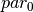), the other represents that term at
(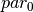), the other represents that term at  (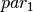). is used to linearly scale between these two parameters to obtain the value of the parameter at each value of (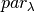)
(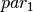). is used to linearly scale between these two parameters to obtain the value of the parameter at each value of (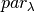)
(14)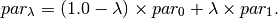
This equation is used to scale the charge, and parameters assigned to each atom site (see equations (1)), and the force constants (, and ) and equilibrium sizes (, and ) for the bond, angle and Urey-Bradley terms (see equations (5), (6) and (7)). This equation is not used to scale the dihedral parameters, as the functional form of the dihedral potential is more complicated. Rather than scale the dihedral parameters, ProtoMS uses to scale the total energy of each dihedral;
(15)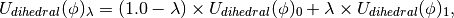
where 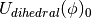 is the dihedral energy using the parameters for , 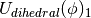 is the dihedral energy using the parameters for , and 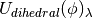 is the scaled dihedral energy at that value of .
Any and all parts of the forcefield can be scaled. This includes all of the forcefield parameters of any solutes, all of the parameters of any proteins, and all parameters of any solvent molecules. While this is very useful, and enables perturbations of any and all parts of the system, there are many cases where just changing the forcefield parameters is not sufficient to smoothly morph from one system into the other. There are many cases where the geometry of the molecules needs to be changed with . Fortunately ProtoMS provides this capability for solute molecules. Any internal coordinates that are part of the z-matrix of a solute molecule may perturbed with . Geometry variations are a powerful tool as they allow for very complicated, yet very smooth transitions between two systems to be described. A good example of such a transition is the annihilation of the hydrogen atoms as a methyl group is morphed into a single hydrogen.
Geometry variations allow for a smoother transition between two systems, for example here a methyl group is smoothly converted into a hydrogen.
As well as enabling smooth transitions between systems, geometry variations may be used to calculate potentials of mean force along structural coordinates.
Dual Topology Calculations
A dual topology method to calculate free energy changes is also available in ProtoMS. In the single topology method force field terms were linearly interpolated so that they match the force field parameters suitable for particular molecule at either end of the perturbation ( 0.0 or 1.0). As two molecules often differ not only in their force field terms but also their geometry, it is often necessary to modify the internal coordinates as well. This is relatively easy In simple cases (morphing a methyl group into a hydrogen group) but for larger, complex, perturbations this is often cumbersome if not impossible. In the dual topology method no geometry variations are attempted. However, the interaction energy of a pair of solutes with their surroundings (solvent, protein, other solutes), is gradually turned on or off with the coupling parameter.
(16)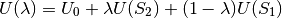
Equation (16) thus shows that at any given value of , the total energy of the system consists in a term 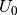 that is independent of the perturbation and a term and 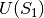 which is a function of the intermolecular energies of the pair of solutes for which a free energy change is to be calculated.
A dual topology setup is simpler and more generally applicable than a single topology setup. However dual topology approaches suffer from a number of technical difficulties which are mainly related to the fact that if a solute does not have any intermolecular interaction with its surroundings, it can drift anywhere in the simulation box. This usually causes the free energy difference to converge very very slowly (in practice not at all). To overcome these difficulties, the dual topology technique implemented in ProtoMS constrains a pair of solutes to stay together by the introduction of dummy bond between the center of geometry of the two solutes. As this does not prove to be sufficient to avoid convergence issues, a soft-core non bonded energy function is also implemented. In essence, the function that computes the intermolecular energy of the solutes is modified such that when a solute is not fully interacting with its surroundings, it’s Lennard-Jones and couloumbic energies are softened such that atomic overlaps do not result in very large, positive, energies. The solute is effectively ‘softer’. There are three soft-core versions implemented in ProtoMS. The original implementation in ProtoMS for a solute that is being turned off is described by equation (17).
(17)
where the parameters n and  control the softness of the Coulombic and Lennard-Jones interactions respectively.
control the softness of the Coulombic and Lennard-Jones interactions respectively.
An alternative that has been useful in some applications is described by equation (18)
(18)
with an additional softness parameter for the Coulombic interactions.
Third, the soft-core implementation in the latest version of the Amber package is available and is described by equation (19)
(19)
ProtoMS conducts a simulation by performing a sequence of moves on the system. The following moves are currently implemented
Residue Moves A residue move is a Monte Carlo move on a single protein residue. Obviously, for a residue move to be be performed, at least one protein that has flexible residues must be loaded. Each residue move comprises the following steps
You can change the flexibility of any residue in any protein by using the fixbackbone and fixresidues commands described in section Miscellaneous. All residues of all proteins are flexible by default, and have flexible backbones. Note that the backbone move is still experimental and not thouroughly tested. I recommend that you fix the backbone of all residues for production simulations. You control the maximum amounts that the residue moves via the residue template (see Templates). The actual amount that a residue moves by will be based on random values generated within the limits of the maximum amounts set in the residue template, e.g. if the maximum change of an angle was , then the angle will be changed by a random value generated evenly between 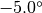 and  .
.
Solute Moves A solute move is a Monte Carlo move on a single solute molecule. Obviously, for a solute move to be performed, at least one solute molecule must be loaded. Each solute move comprises the following steps
Solvent Moves
A solvent move is a Monte Carlo move on a single solvent molecule. Obviously, for a solvent move to be performed, at least one solvent molecule must be loaded. Each solvent move comprises the following steps
You can control the maximum amounts that the solvent is translated and rotated by by editing its solvent template (see Templates).
Volume Moves
A volume move is a Monte Carlo move that changes the volume of the system. This is needed to be able to perform Monte Carlo simulations at constant pressure (i.e. using the NPT ensemble). For a volume move to be performed you need to have loaded a box of solvent molecules, and be running using periodic boundary conditions. A volume move is comprised of the following steps
GCsolute Moves
A GCsolute move is a Monte Carlo move on a single Gcsolute molecule. Each GCsolute move comprises the following steps
You can control the maximum amounts that the GCsolute is translated and rotated by by editing its template (see Templates).
Insertion Moves
An insertion move is a Monte Carlo move on a single GCsolute molecule, whereby the value of a GCsolute is turned from 0 to 1. Each insertion move comprises the following steps;
is examined; if it is set to 1 then another is chosen until the examined value is 0 for that GCsolute molecule is set to 1, and the new energy associated with this value of is calculated for that GCsolute molecule is saved, otherwise the original value of 0 is restored.Deletion Moves
A deletion move is a Monte Carlo move on a single GCsolute molecule, whereby the value of a GCsolute is turned from 1 to 0. Each deletion move comprises the following steps
is examined; if it is set to 0 then another is chosen until the examined value is 1 for that GCsolute molecule is set to 0, and the new energy associated with this value of is calculated for that GCsolute molecule is saved, otherwise the original value of 1 is restored.Theta Moves
A theta move is a Monte Carlo move on a single GCsolute molecule, whereby the value of a GCsolute is sampled. Each theta move comprises the following steps
for that GCsolute molecule is randomly changed, and the new energy associated with this value of is calculated for that GCsolute molecule is saved, otherwise the original value of is restored.Sample Moves
A sample move is a Monte Carlo move on a single GCsolute molecule, whereby the value of a GCsolute is sampled whilst applying a biasing potential, jbias. Each sample move comprises the following steps
for that GCsolute molecule is randomly changed, and the new energy associated with this value of is found for that GCsolute molecule is saved, otherwise the original value of is restored.Relative Move Probabilities
You can specify which moves should be run by passing arguments to the simulate and equilibrate commands (see Running a Simulation). You can use these commands to assign a weight to each type of move, e.g. 100 for solvent moves, 10 for protein moves, 1 for solute moves and 0 for volume move. The type of move chosen for each step of the simulation is generated randomly based on these set relative weights. These weights mean that on average, in 111 moves, 100 of these moves will be solvent moves, 10 of these moves will be protein moves, 1 of these moves will be solute moves and none of the moves will be volume moves (e.g. no volume moves will be performed). Note that you need to perform some volume moves if you wish to sample from the NPT ensemble!
ProtoMS is a simple program that may be used from the command line. Once you have compiled it you should find it in the top directory (it is called simply protoms3). If you run the program you should see that it prints out some information about the program and license, then it complains that nothing has been loaded so it closes down. The interface to ProtoMS has been designed to allow easy integration of ProtoMS with scripts, and to enable simple use from a command file. A ProtoMS input consists of a set of commands and values, e.g. the command temperature could have the value 25.0 . This would set the simulation temperature to  C. The input is passed to ProtoMS via a command file. The above command could thus be input by setting by placing the line
C. The input is passed to ProtoMS via a command file. The above command could thus be input by setting by placing the line
temperature 25.0
into a file and have ProtoMS read commands from that file. You specify the command file by passing it to ProtoMS on the command line, e.g.
protoms3 mycmdfile.txt
Note that the ProtoMS is insensitive to whether commands, variables or contents of files are uppercase or lowercase, so you are free to mix and match capitals and small case wherever you want. The only exception to this is in the specification of filenames, where your operating system may care about case.
For replica exchange or ensemble type calculations, you have to execeute ProtoMS through the OpenMPI program, e.g.
mpirun -np 16 protoms3 mycmdfile.txt
If you run ProtoMS from the command line you should see that it prints out a lot of information to the screen (on Unix called standard output, STDOUT). If you look closely at the output you should see that each line of output is preceeded by a tag, such as ‘HEADER’ or ‘INFO’. ProtoMS uses streams to output data, and these tags state which stream the line of data came from. Thus the information at the top of the output that gives the license and version details has been printed to the ‘HEADER’ stream, while the lines stating that ProtoMS is closing down because nothing has been loaded have gone to the ‘FATAL’ stream. ProtoMS uses the following streams
These streams may be switched on or off, directed to STDOUT, directed to STDERR or directed to a file. You can do this by using the commands
streamSTREAM STDOUT
streamSTREAM STDERR
streamSTREAM off
streamSTREAM /path/to/file.txt
where STREAM is the name of the stream that you wish to direct (e.g. streamINFO). ProtoMS is insensitive to case, so you could use the command
streaminfo stdout
However, your operating system may be sensitive to case so you should ensure that you use the correct case for filenames.
You are free to direct multiple streams into a single file, or to turn undesired streams off. If a stream is output to STDOUT or STDERR then the name of the stream is prepended to the start of each line. The name is not attached if the stream is directed into a file. The WARNING and FATAL streams are special as unlike the other streams, these two cannot be turned off. These two streams will be directed to STDERR if they have not been directed elsewhere.
By default, the HEADER, INFO, MOVE and RESULTS streams are directed to STDOUT, the WARNING and FATAL streams are directed to STDERR, and the remaining streams are switched off. Bear this in mind if you think that you should be getting output and you are not - make sure that the stream that contains your output is directed to something!
The streamSTREAM command is used to specify the direction of the stream at the start of the simulation. It is possible to redirect streams while the simulation is running. This is slightly more complicated than then streamSTREAM command, and is described in section Miscellaneous.
There are many commands to set parameters that you can use to control your simulation. To make it easier to search for those relevant to your calculations, these will be divided in several subsections.
In the subsections below, unless otherwise specified:
debug logical
This turns on or off debugging output that may be useful for ProtoMS developers. By default debug is off.
testenergy logical
This is used to set whether or not to turn on testing of energies. This is useful if you are developing ProtoMS. By default testenergy is off.
prettyprint logical
Turn on or off pretty printing. With pretty printing turned on, you will see nice starry boxes drawn highlighting certain parts of the output. By default, prettyprint is on.
dryrun logical
Whether or not to perform a dry run of the simulation. If this is true then all of the files will be loaded up and your commands parsed. If there are any problems then these will be reported in the WARNING stream. No actual simulation will be run, though any files that would be created may be created. While this option is very useful for testing your commands, it is not perfect and cannot check everything. I thus recommend that you also perform a short version of your simulation before you commit yourself to full production. By default dryrun is off.
ranseed integer
where integer is any positive integer. This command is used to set the random number seed to be used by the random number generator. The random number seed can be any positive integer, and you will want to specify a seed if you wish to run reproducable simulations. If you do not specify a random number seed then a seed is generated based on the time and date that the simulation started.
temperature float
Use this command to specify the simulation temperature in Celsius. By default temperature is 25.0 C.
pdbparam logical
Whether or not to automatically detect and use, in the simulation, any chunks which might be included in the input PDB files after REMARK. It is most commonly used to include the fixresidues and fixbackbone commands often found at the beginning of a protein scoop. Any chunks included in pdb files will be applied before any other chunk. By default pdbparam is on.
cutoff float
where float is any positive number. This command is used to set the size of the non-bonded cutoff, in Angstroms, used to truncate the intermolecular non-bonded potentials (see eq (1)). By default the non-bonded cutoff is 15A.
feather float
To prevent an abrupt cutoff, the non-bonded energy is scaled quadratically down to zero over the last part of the cutoff (see eq (1)). The feather command sets the distance over which this scaling occurs, e.g.
feather 1.3
sets this feathering to occur over the last 1.3A. The default value of the feather is 0.5A.
cuttype string
where string is either residue or molecule. This specifies the type of non-bonded cutting to use; either residue, where the cutoff is between protein residues, solute molecules and solvent molecules, or molecule, where the cutoff is between protein molecules, solutes molecules and solvent molecules. By default the cuttype is residue.
pressure float
This command sets the pressure of the system in atmospheres. By setting the pressure to a non-zero value you will be able to perform a simulation in the NPT isothermal-isobaric ensemble. Note that you need to perform volume moves (see Generic Moves) to be able to run in the NPT ensemble. By default the pressure is equal to zero, and thus a NPT simulation is not performed.
maxvolchange float
This command sets the maximum change in volume for a volume move in cubic Angstroms. This command only has meaning if an NPT simulation is being performed. By default maxvolchange is equal to the number of solvent molecules divided by ten.
prefsampling integer
This command is used to turn on preferential sampling of the solvent, and to specify which solute is used to define the center of the preferential sampling sphere. The command
prefsampling 1
means that the solvents closest to solute 1 will be moved more frequently than those furthest from solute 1. An optional parameter may be used to change the influence of the sphere, e.g.
prefsampling 1 100.0
will specify a preferential sampling sphere centered on solute 1, with a parameter of 100.0. The larger the parameter, the more highly focussed the influence of the sphere around the closest solvent molecules. By default the parameter is 200.0, and preferential sampling is turned off.
boundary none
This turns off any boundary conditions, i.e. the simulation will be performed in vacuum.
boundary periodic dimx dimy dimz
This turns on periodic boundaries, using a orthorhombic box centered on the origin, with dimensions dimx A by dimy A by dimz A. Note that these dimensions may be modified by any loaded solvent file
boundary periodic ox oy oz tx ty tz
This turns on periodic boundaries using an orthorhombic box with the bottom-left-back corner at coordinates (ox , oy , oz) A and the top-right-front corner at (tx , ty , tz) A. Note that these dimensions may be modified by any loaded solvent file.
boundary cap ox oy oz rad k
This turns on solvent cap boundary conditions. Protein and solute molecules will experience no boundary conditions, while solvent molecules will be restrained within a spherical region of radius rad A, centered at coordinates (ox , oy , oz) A. A half-harmonic restraint with force constant k kcal.mol-1.A-2 is added to the solvent energy if it moves outside of this sphere.
boundary solvent
This sets the boundary conditions to whatever is set by the loaded solvent files. If no solvent files are loaded then no boundary conditions are used. This is the default option, and the method of setting boundary conditions via a solvent file is described in section Solvent File
surface quality 3 probe 1.4
This command will cause surface area calculations to be performed during the simulation. quality can be set to 1,2,3,4 and will result in increasingly precise surface area calculations. For typical simulations, 3 should be fine and 2 will not give a huge error. probe is the radius of the probe and should be set to 1.4 if you want to calculate the solvent accessible surface area of water, but can be set to 0 if you want to calculate the van der waals surface area of a molecule.
born cut 20 threshold 0.005 proteins
This command will enable Generalised Born energy calculations. Thus to run a full GBSA simulation you should use both the surface and born keywords. cut controls the cutoff distance for the computation of the Born radii. If you work with a medium sized protein scoop of circa 100-150 residues, 20 should be fine but you may want a larger value for simulations of large proteins. threshold controls the number of pairwise terms that are not updated when the effective Born radii must be calculated by the Pairwise descreening approximation. The default value 0.005 appear to be a good tradeoff. Increasing it will make the simulation faster but less accurate. proteins activates the rescaling of the Born radii to compensate for systematic errors of the Pairwise Descreening Approximation in large biomolecules. It should be used only when simulating proteins and then its effectiveness has not been yet convincingly demonstrated.
To be able to run a single simulation for a given lambda value, you will need to use the following parameters:
lambda float
where float is a number between 0.0 and 1.0. Specify the value of . If a single value is given then that is used for . If three values are given then these are used for , and in the forwards and backwards windows, e.g.
lambda 0.5 0.6 0.4
would set for the reference state to 0.5, for the forwards perturbed state to 0.6, and for the backwards perturbed state to 0.4. By default all values of are 0.0.
To be able to run several lambdas in parallel and hence perform your full perturbation at once with ProtoMS, you will need the commands shown below. Running your free energy calculation in this manner, you will be able to attempt exchanges between the configurations of your system at the different lambdas, increasing the chances of convergence.
lambdare integer float float float
is the right command to set a replica exchange calculation between the different given as floats, where float is a number between 0.0 and 1.0. In principle, any desired number of values can be used, and the simulation will require to be runned in as many cores as values are provided. The integer value stands for the frequency at which the exchange between the different values is attempted. Please, note that this value should be a multiple of the frequency of printing output when the dump commands are used (see Frequent output generation). If no exchange is desired, the frequency of exchange can simply be set to the total number of moves of the simulation.
As an example:
lambdare 20 0.000 0.333 0.667 1.000
corresponds to a simulation which will run at four different windows in parallel, and will attempt swaps between the conformations of different windows each 20 moves.
dlambda float
where float is a number between 0.0 and 1.0 (often of the order of 0.001). This command sets the gradient for a free energy calculation. It is required for thermodynamic integration (TI) to be applied on the simulation results.
printfe string
where string should be either off, bar or mbar. Whether to print the free energy estimates required to proceed with BAR or MBAR calculations. Take into acount that this estimates will take some time. Your simulations may run faster when this option is set to off (default).
In case dual topology is desired, whether it is for a single or multiple simulation, the following parameters must be used:
dualtopologyint integer1 integer2 synctrans syncrot
This turns on the dual topology method of calculating relative free energies, where int1 is the perturbed solute at = 0.0 and in2 is the solute at = 1.0 . If synctrans is set, the rigid body translations of the two solutes will be synchronised. If syncrot is set, the rigid body rotations of the two solutes will also be synchronised.
softcoreint solute integer
This causes the intermolecular energy of solute integer to be softened. Alternatively, you can write all instead of the solute index and all solutes will have their non bonded energy softened. The softcore is only supported for solutes.
softcoreparams coul 1 delta 1.5 gb 0 old
This causes the solutes non bonded energy to be softened with a parameter n set to 1 and set to 1.5. (see eq (17)). The old keyword selects the original soft-core implementation and can be omitted. If conducting a GBSA simulation, this also causes the GB energy to be softened as well. It is recommended to use the same parameter for the Coulombic and Generalised Born energy. The values listed here, seem to work well for a number of relative binding free energy calculations but actual optimum values of these parameters will depend on your system.
softcoreparams coul 1 delta 0.2 deltacoul 2.0 soft66
This causes the solutes non bonded energy to be softened with a parameter n set to 1, set to 0.2 and set to 2.0. (see eq (18)). The soft66 keyword selects the second soft-core implementation, eq (18) .
softcoreparams coul 1 delta 0.5 deltacoul 12.0 amber
This causes the solutes non bonded energy to be softened with a parameter n set to 1, set to 0.5 and set to 12.0. (see eq (19) ). The amber keyword selects the third soft-core implementation, eq (19). The values listed here are the default values in the Amber package.
gcmc 0
This command tells ProtoMS that it is to perform a GCMC simulation, and that the starting value of  all of the GCsolutes is 0.
all of the GCsolutes is 0.
potential float
This command will set a B-value of float (i.e. -8) for moves in the Grand Canonical Ensemble. The value of B can be related to the excess chemical by the following equation:
(20)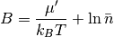
In the equation, 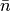 is the number density of the GCsolute multiplied by the simulation subvolume.
multigcmc float float float
is the right command to several gcmc simulations running in parallel for different B values. Each float is the B value for each independent calculation. In principle, the number of B values is not restricted. The simulation will need to be submited to run in parallel in as many cores as B values.
originx float
This command will set the X origin of the defined GCsolute sampling subvolume to be the specified float
originy float
This command will set the Y origin of the defined GCsolute sampling subvolume to be the specified float
originz float
This command will set the Z origin of the defined GCsolute sampling subvolume to be the specified float
x float
This command will set the distance along the X coordinate from originx to be the specified float
y float
This command will set the distance along the Y coordinate from originy to be the specified float
z float
This command will set the distance along the Z coordinate from originz to be the specified float
Alternatively to the origin, the position of the box may be set using its center:
centerx float
This command will set the X center of the defined GCsolute sampling subvolume to be the specified float
centery float
This command will set the Y center of the defined GCsolute sampling subvolume to be the specified float
centerz float
This command will set the Z center of the defined GCsolute sampling subvolume to be 9
A different, equally valid expression for the distance or length of the box is the keyword len?:
lenx float
This command will set the distance along the X coordinate from originx to be the specified float
leny float
This command will set the distance along the Y coordinate from originy to be the specified float
lenz float
This command will set the distance along the Z coordinate from originz to be the specified float
jaws1 0
This command tells ProtoMS that it is to perform a JAWS stage one simulation, and that the starting value of all of the GCsolutes is 0.
thres 0.95
This command will set the threshold for defining whether a molecule is on in the first stage of the JAWS method to be 0.95 (default)
Note here that, in order to run a JAWS stage 1 calculation, you will also need to include softcores. The parameters to do this can be found among the Free energy calculation parameters.
jaws2 1
This command tells ProtoMS that it is to perform a JAWS stage two simulation, and that the starting value of all of the GCsolutes is 1.
jbias float
This command will set the value of the biasing potential in the second stage of the JAWS algorithm to be float, in kcal/mol (i.e. 14).
As well as controlling the simulation, commands are also used to specify the names of the input files that describe the system and forcefield for the simulation. These input files are specified using the following commands
proteinN filename
Specifies the name of the Nth protein file, e.g.
protein1 protein.pdb
specifies that protein 1 should be loaded from the file protein.pdb. Note that proteins must be numbered sequentially from 1 to MAXPROTEINS. The format of a protein file is described in Protein File.
soluteN filename
specifies the name of the Nth solute file. Note that the solutes must be numbered sequentially from 1 to MAXSOLUTES. The format of a solute file is described in section Solute File.
solventN filename
specifies the name of the Nth solvent file. Unlike the protein and solute files, the solvent file may contain multiple solvent molecules, though the total number of solvent molecules cannot exceed MAXSOLVENTS. The format of a solvent file is described in section Solvent File.
grandN filename
specifies the name of the Nth GCsolute file. Unlike the protein and solute files, the GCsolute file may contain multiple GCsolute molecules, though the total number of GCsolute molecules cannot exceed MAXSOLVENTS. The format of a GCsolute file is described in section GCsolute File.
parfile filename
Specify the name of a forcefield parameter file. You can specify as many parameter files as you wish. The list of parameter files is read from top to bottom, such that if any paramater files contain contradictory information, the last parameters read by ProtoMS are used. The format of the parameter file is described in section Parameter / Forcefield Files .
There are two main keywords related to running a simulation. These are chunk and dump. All individual actions (commands which ProtoMS should perform only as it is prompted to do so) are handled with chunk lines. Actions which ProtoMS should perform with a certain frequency while the simulation is running, are handled with dump lines. We can start by talking about chunks.
A simulation can be run as a sequence of chunks. Different things may be accomplished in each chunk, e.g. running some steps of equilibration, printing the protein coordinates to a PDB or redirecting a stream to a new file. Chunks may be mixed and matched, and you can run as many chunks as you desire within a single simulation. You specify a chunk using the command
chunk chunk command
Chunks are executed in the order they appear in the command file.
The meat of a simulation is equilibration and production. In ProtoMS equilibration is defined as sampling without the collection of free energy or energy averages, while production is sampling with the collection of free energy and energy averages. Equilibration and production are specified using the equilibrate and simulate chunks, e.g.
chunk equilibrate 50
performs 50 steps of equilibration.
chunk simulate 1000
performs 1000 steps of production.
Additional options may be passed to these two chunks to control the probability of different types of move and the frequency of printing out move and energy details to the MOVE and ENERGY streams. These options are
printmove=N
Print move and energy information every N moves.
protein=N
Set the relative probability of protein moves to N.
solute=N
Set the relative probability of solute moves to N.
solvent=N
Set the relative probability of solvent moves to N.
gcsolute=N
Set the relative probability of gcsolute moves to N.
insertion=N
Set the relative probability of insertion moves to N.
deletion=N
Set the relative probability of deletion moves to N.
theta=N
Set the relative probability of GCsolute theta moves to N.
sample=N
Set the relative probability of GCsolute sample moves to N.
volume=N
Set the relative probability of volume moves to N.
newprob
Reset relative move probabilities to zero.
Note that succeeding equilibration or production chunks inherit the move probabilities and printing frequency of preceeding simulation or equilibration chunks. I thus recommend that you use the newprob option to reset the move probabilities for each equilibration or production chunk you run.
The following examples illustrate the use of these options;
chunk newprob equilibrate 500 printmove=10 protein=1 solvent=1000
Perform 500 steps of equilibration, printing move and energy information every 10 moves, making on average 1 protein move for every 1000 solvent moves (and performing no other types of move).
chunk equilibrate 100 solute=500
Perform 100 steps of equilibration. Because this chunk will inherit from the previous chunk, the move and energy information will still be printed every 10 moves, and still, on average 1 protein move will be made every 1000 solvent moves. However this line has added that on average 500 solute moves should be made for every 1000 solvent moves, thus the probability of a protein move is now 1 in 1501, the probablity of a solute move is 500 in 1501, and the probability of a solvent move is 1000 in 1501.
chunk simulate 500 printmove=1 newprob volume=1 solvent=300
Now perform 500 steps of production, printing move and energy information every move, performing no protein moves, and 1 volume move for every 300 solvent moves.
A couple of simulate-like commands are specifically related to GBSA simulations.
chunk splitgbsasimulate 100 10 solute=1 protein=9
The above command should only be used if you are doing an implicit solvent simulation (e.g, you turned on the surface and born keywords). This will cause to run 10 moves with a crude GBSA potential and then perform an acceptance test based on the difference of energies between the crude GBSA potential and the GBSA potential you set with the cutoff, born and surface keywords. This will be repeated 100 times. Here the move probabilities were set to 1 and 9 for solute and protein, but could be other figures. After this keyword has been used it is advised to use the following keyword.
chunk resetgb
This will cause the total energy of the system to be calculated fully and the Born radii to be correctly updated. Periodic usage of this command, along with the previous one, avoids drifts in the total energy of the system.
As well as controlling the sampling, you can also control the collection and output of results using simulation chunks, and the reading and writing of restart files.
chunk averages reset
Reset all averages to zero and start collection of results from scratch.
chunk averages write
Write out the energy and free energy averages to the RESULTS stream. It is probably a good idea to do this a some point before the end of the simulation!
chunk averages write myfile.txt
Does the same as above, but redirects the RESULTS stream to myfile.txt before the results are written.
chunk restart write
Write a restart file for the current configuration to the RESTART stream.
chunk restart write myfile.txt
Does the same as above, but redirects the RESTART stream to myfile.txt before the restart file is written.
chunk restart read myfile.txt
Read in a restart file from the file myfile.txt.
Note that all the chunk averages lines above are equally valid, if results is written instead of averages:
chunk results write myfile.txt
You can use a simulation chunk to output a PDB of the current configuration. The output can be tailored to include only the parts of the system that you are interested in. This is useful if you are trying to conserve disk usage. You can output PDBs using the ‘pdb’ chunk
chunk pdb all
Output a PDB of all proteins and solutes to the PDB stream
chunk pdb protein=all
Output a PDB of all proteins to the PDB stream
chunk pdb protein=2
Output a PDB of protein 2 to the PDB stream
chunk pdb solute=all
Output a PDB of all solutes to the PDB stream
chunk pdb solute=1
Output a PDB of solute 1 to the PDB stream
The output PDB can be controlled via additional commands added to the above lines, e.g.:
chunk pdb all solvent=all
Output the PDB including all solvent molecules.
chunk pdb solute=1 solvent=5.0
Output a PDB including all solvent molecules within 5.0A of whatever else is printed - in this case solute 1.
chunk pdb protein=1 showdummies
Output a PDB that also includes dummy atoms.
chunk pdb solute=all showhidden
Output a PDB that also includes hidden solute molecules (solutes that are used to perform geometry perturbations).
chunk pdb all file=myfile.txt
Redirect the PDB stream to myfile.txt then print the PDB.
chunk pdb all solvent=all standard
Output a PDB that have a more standard format than normal, such that it can be viewed and interpreted correctly in most programs.
ProtoMS supports a number of restraining potentials which can be used to modify the potential energy function and bias the simulation towards particular configurations. To use a restraint in ProtoMS you must first assign an id number to a particular atom or set of atoms, using the following command
chunk id add int1 type int2 atname resname|resnumber
where int1 is the index numberr for this id. So if this if the first id you create you may want to use the number 1. type can be SOLUTE or SOLVENT or PROTEIN depending on where the atom you want to tagg is. atname is the name of the atom (e.g CA), resname is the name of the residue the atom is in if you are dealing with a SOLUTE or SOLVENT. However if it the atom is in a protein, then you must use the PDB residue number. Once you have specified a few ids, you can create restraints using these ids and the following command
restraint add id1[-id2-id3-id4] type1 type2 [other parameters]
where id1 to id4 designate up to four ids. type1 designate the type of the restraint. It can be either cartesian,`bond` or dihedral. In the first case the restraint is applied in cartesian coordinates and will apply to only one atom (id1). In the second case, it is applied in internal coordinates, and will apply to only two atoms (id1-id2). In the last case it is applied to four atoms (id1-id2-id3-id4) and in internal coordinates. type2 designate the functional form of the restraint. It can be harmonic or flatbottom. Each functional form requires additional parameters. The following options are currently possible:
restraint add id1 cartesian harmonic xrest yrest zrest krest
For a cartesian harmonic restraint you need to specify the coordinates of the anchoring point and the value of the force constant.
restraint add id1 cartesian flattbottom xrest yrest zrest krest wrest
For a flatbottom restraint you must in addition specify the width of the flat region of the potential.
restraint add id1-id2 bond harmonic krest
For a bond restraint you must specify only the force constant
restraint add id1-id2-id3-id4 dihedral harmonic theta krest
For a dihedral harmonic restraint you must specify the target equilibrium angle and the force constant. This restraint does not work on solvent molecules and on protein backbone atoms.
The following example shows how to add a harmonic potential restraint between a ligand atom and a protein atom.
chunk id add 1 SOLUTE 1 N2 LI8
This chunk will create id number 1 which will point to solute atom 1 (the first atom in the solute pdb file), named c00, from residue L10.
chunk id add 2 PROTEIN 1 O 318
This chunk will create id number 2 which will point to protein pdb loaded as protein1 by ProtoMS. The atom named O in residue 318 will be selected. Note that 318 is the residue number that appear in the PDB file. It is not necessarily the 318th residue to be loaded by ProtoMS in this protein.
restraint add 1-2 bond harmonic 5.0 3.33
This chunk will cause a restraint to be added between the atoms id 1 and 2 points to. The functional form of this restraint will be a harmonic potential that is function of the distance between these two atoms. The force constant will be 5 kcal mol - 1. A - 2 and the equilibrium distance 3.33 angstrom.
Applying a hardwall restraint is slightly different
chunk id add 1 SOLUTE 2 O00 WAT
This chunk will create id number 1 which will point to solute number 2, looking at the O00 atom of resname WAT
hardwall 1 25.890 16.895 59.083 1.8 1000000000
This chunk will apply a hardwall restraint to the center of geometry of the solute number 2. The form of this restraint is spherical, with a radius of 1.8 and will be centered at the point defined by the coordinates 25.890 16.895 59.083. If the center of geometry of the molecule attempts to leave this radius then a huge penalty is applied, preventing the move. Equally, if any atom from another molecule tries to occupy the hardwall region then the penalty is applied.
A hardwall restraint can also be applied on the initial position of the center of geometry of a ligand. In this case, no coordinates need to be specified, and the lines results:
hardwall 1 1.8 1000000000
This option should be quite useful when the ligand simply wants to be kept in its initial position.
Incidental generation of output files might not be convenient either for the production of results and restart files nor for PDB outputs. Consistently, there is an alternative option which allows for the generation of these files while the simulate chunk is running.
This is controlled with the alternative key word dump:
dump frequency command
This manner of output generation can be applied to all commands included in Results and Restarts secction, as well as PDB output section.
An example of a dump line would be:
dump 100000 results write results
This line, given as input for ProtoMS, will append results information to the results file every 100000 moves, thoughout the simulate part of your simulation.
It is important to note how the appending behaviour variates. For frequent results and PDB printing, new results will be appended to the existent file. However for the restart generation, the existing file will be overwritten every time. Consistently these imput lines:
dump 100 results write results
dump 100 pdb all file=all.pdb
dump 100 restart write restart
dump 100 averages reset
chunk simulate 400 solvent=10 solute=5 volume=1
Will generate four results reports all appended to the file results, four PDB conformations of the system appended to all.pdb, but only one restart report (the last printed) in the file restart.
Dump lines can be written in any order, and they all will be applied while the simulate chunk is running.
As well as running the simulation, there are also a collection of other things that you can do in a simulation chunk. These are
chunk singlepoint
Calculate the energy of the current system and output it to the SPENERGY stream. This is useful if you just want to use ProtoMS to evaluate a forcefield energy. You can set up the input files, turn off all streams, direct stream SPENERGY to STDOUT and run a simulation that only consists of this ‘singlepoint’ chunk.
chunk soluteenergy N
Calculate the energy of solute N. This calculates the energy of solute N and outputs the components of this energy in great detail. This is useful for debugging a forcefield or for collecting average energy components that are more finely divided than those normally collected.
chunk retienergy 0.2
The RETI free energy method requires the calculation of the energy at the neighbouring two windows at the end of the simulation. This chunk will calculate the energy at windows 0.2 above and below the reference state, and will output the results to the RETI stream.
chunk lambda 0.5
Sets to 0.5. Will calculate and return the change in energy associated with this change in . This is useful if you wish to perform a slow growth or fast growth free energy simulation. You could also use this in conjunction with the ‘averages print’ and ‘averages reset’ chunks to calculate the free energy of all windows across within a single simulation. This is because the window widths are preserved by the change in , thus if the windows were 0.1 0.2 0.4 before the change, then they would be 0.4 0.5 0.7 after the change. Note that the values of are clamped between 0.0 and 1.0.
chunk lambda 0.5 0.6 0.4
As above, except set the values of the forwards and backwards windows to 0.6 and 0.4 respectively.
chunk lambda delta 0.1
As above except instead of directly setting , change by 0.1. This will also increase the value of for the for- wards and backwards windows by 0.1.
chunk freeenergy 0.3 0.5
Calculate quantities need for free energy estimators. This will calculate the derivative of the potential with respect to as needed for thermodynamic integration, and energies at =0.3 and =0.5 as needed for Bennett Acceptance Ratio method. All of these energies will be printed to the INFO and ENERGY streams.
chunk fixresidues 1 all
Fix all of the residues of protein 1.
chunk fixresidues 1 1-10 12 14 16-20
Fix the residues of protein 1. Only fix residues 1 to 10, 12, 14 and 16 to 20.
chunk fixresidues 1 none
Unfix all of the residues of protein 1.
chunk fixbackbone 1 all
Fix the backbone of all residues of protein 1. This chunk has the same syntax as the fixresidues chunk.
chunk fixbackbone 1 none 20-35
Unfix all of the residues of protein 1, then fix the backbone of residues 20-35. This ensures that only the backbone of residues 20-35 is fixed.
chunk12 transrot 1 0.0 0.0
Set the translation and rotation displacements for solute 1 to zero. This overrides the values read in the template file. The first floating point number is the translation displacement and the second one is the rotation displacement and is optional. Can be useful for pure solvent and gas-phase calculations.
setstream info=stdout move=off
Direct the INFO stream to STDOUT and turn the MOVE stream off.
setstream restart=myfile.txt warning=stderr
Direct the RESTART stream to myfile.txt and the WARNING stream to STDERR. solvate]
chunk solvent box xdim ydim zdim [xorig yorig zorig xmax ymax zmax]
This command can be used to replicate a solvent file loaded as solvent1 such that the final solvent occupies a box of dimensions xdim ydim zdim with origin (0,0,0). Alternatively the origin can be specified along with the maximum coordinates of the cubix box. solvate2]
chunk solvent cap xorig yorig zorig rad
As before but the output will be a spherical cap of solvent centered at the specified origin and with a radius rad. The last two commands can be used to create large solvent boxes when needed. Once this chunk has been performed, you should save a pdb of the system using the chunk pdb and then edit the output file such that it can load as ProtoMS solvent pdb. The process of replicating the solvent molecules can be quite memory consuming and you may find you have to recompile ProtoMS so that it can handle a large number of solvent molecules, particularly if the coordinates of the system you want to solvate are far away from the coordinates of the solvent molecules in the input solvent box.
As there are many options that can be set in ProtoMS, we provide a range of setup tools that can be used to setup the most common type of simulations. The main tool is called protoms.py and is document in the next chapter. For more advanced use, one can use the individual setup tools as documented here.
In order to perform analysis of the ProtoMS simulations, there is a range of tools than be used. They are documented here.
ProtoMS can read in five types of input file
ProtoMS is insensitive to case, so you can mix upper case and lower case within these files without affecting how they are read.
The parameter file is the most powerful, and hence the most complicated of all of the input files read by ProtoMS. The parameter file provides all of the forcefield parameters that are used in a simulation, and it also provides all of the templates that provide the connectivity and z-matrices of all of the loaded molecules. The parameter file uses a word based format, meaning that you can leave as many spaces between words on a line as you like, and you do not have to worry about lining up data into particular columns.
The general format of a parameter file is shown below:
# comment lines start with a '#'
mode clj
#.... charge / Lennard Jones forcefield parameters
mode bond
#.... bond parameters
mode template
#.... templates
#parameter file uses a word-based format, so leave as many spaces as
#you want between words, e.g.
mode clj
mode bond #comments can also go at the end of any lines, like this!
MoDe DiHeDrAl # you can use whatever case you want (though try to make
# things readable!
How ProtoMS reads the parameter file is controlled by which mode the file has been set. There are several different modes, and as figure 3.5 shows, it is possible to change between modes within a single file. The different modes are
ProtoMS will only read lines that are valid within the mode that is being read. If ProtoMS could not read a line, or finds an incorrectly formatted line, then ProtoMS will print a message to the WARNING stream and will skip that line. It is therefore very important that you check the WARNING stream if you are writing or modifying a parameter file. To help you, ProtoMS will write out detailed information about a loaded parameter file to the DETAIL stream. You should check this output to ensure that any changes you make to a parameter file are being correctly loaded by ProtoMS.
ProtoMS can be asked to load as many forcefield files as you desire. Each parameter or template within the forcefield files has either a numerical or name based ID. If two forcefield files have parameters or templates that share the same ID, then ProtoMS will use the value that was read last. ProtoMS will of course warn you that it has overwritten an earlier parameter (by outputting a message to the WARNING stream) but this behaviour could still trip you up! To help you, all of the parameters that use numerical IDs in the forcefield files supplied with ProtoMS use IDs that are between 1 and 2999. You can thus use numerical IDs that are greater than or equal to 3000 without worrying about a clash.
mode info
This mode is used to read in control information for the forcefield. This information is used to set parameters that affect which functions are used to evaluate the forcefield, and to set the values of forcefield-global parameters. The following lines are valid within this mode
ljcombine type
where type can be arithmetic or geometric. This sets the combining rules used for the Lennard Jones parameter to either the arithmetic mean (as used by AMBER), or the geometric mean (as used by OPLS). See equations (3) and (4) for the functional forms of these combining rules.
scl14coul float
This sets the 1-4 coulombic scaling factor, e.g. for OPLS the value should be 0.5 (see eq (9)).
scl14lj float
This sets the 1-4 Lennard Jones scaling factor, e.g. for OPLS the value should be 0.5 (see eq (9)).
mode clj
This mode is used to read in the charge and Lennard Jones (clj) parameters used by the simulation (see equations (1) and (11)). Only one type of line is valid within this mode
par id amber proton-number charge sigma epsilon
id is the unique identifying number for this clj parameter. This can be any number from 1 to MAXCLJ (by default this is 10000). If this ID is the same as an already read CLJ parameter, then ProtoMS will write a warning to the WARNING stream, and will overwrite the old CLJ parameter with the new parameter. To help prevent unintentional ID clashes, then the forcefields supplied with ProtoMS only use parameter IDs from 1 to 2000, and the solvent models supplied with ProtoMS use parameter IDs 2001 to 2999. You are thus free to use parameter IDs from 3000 in your own parameter files.
amber is the AMBER atom type associated with this clj parameter. The AMBER atom type is a two letter code that is used to identify the atom for the purposes of assigning bond, angle, dihedral or Urey-Bradley parameters. If this is a parameter for a dummy or non-chemical parameter, then the AMBER atom type should be ‘??’. Note that the AMBER type is case sensitive. This is different to other parts of ProtoMS, and is required as the GAFF forcefield uses case to distinguish between different AMBER types.
proton-number is the number of protons in the atom associated with this clj parameter, e.g. 1 for hydrogen, 6 for carbon or 8 for oxygen.
charge, sigma and epsilon are the partial charge (in |e|), and Lennard Jones (A) and (kcal mol-1 ) parameters associated with this clj parameter, e.g.
par 2001 OW 8 -0.834 3.15061 0.1521 # TIP3P oxygen
specifies the clj parameter for oxygen in TIP3P water, with parameter number 2001, AMBER atom type ‘OW’ proton number 8, a partial charge of -0.834 |e|, σ = 3.15061 A and ε = 0.1521 kcal mol-1 .
Parameter ID 0 is a special clj parameter used to represent a null atom. This null atom has charge, and values of 0.0, an AMBER atom type of ‘DM’ and a proton number of 0.
mode bond
This mode is used to read in the bond parameters used by the simulation. Two types of line are valid within this mode
par id force-constant bond-length
id is an identifying number from 1 to MAXBNDPARAM (default 5000) that is used to uniquely identify a bond. As in the case of the clj parameters, new parameters with the same ID number will overwrite old parameters with that ID number, and the parameter files supplied with ProtoMS will only use IDs from 1 to 2999, so you can safely use parameters 3000 and up.
force-constant is the force constant (, see eq (5)) for the bond parameter. The units of are kcal mol-1 A-2 . bond-length is the equilibrium bond length ( ), in units of A.
The second type of line valid in this mode is used to associate a pair of AMBER atom types with a bond parameter
atm amb1 amb2 id
This line specifies the bond between atoms with AMBER atom types amb1 and amb2 is assigned the parameters from bond ID id. Note that this bond parameter does not need to have been loaded when this line of the parameter file is being read, as bond parameters are not assigned until after all parameter files have been read. If none of the bond parameter files provide this bond ID, then ProtoMS will print a message to the WARNING stream and will set the bond ID to 0. As in the case of the clj parameters, 0 is a special parameter used to specify a null bond, whose bond parameters, and thus energy, are all 0.0. In addition, any bond involving an AMBER atom with a null clj parameter (i.e. having AMBER atom type ‘DM’) will be automatically set to use bond parameter 0. It is not possible to have a non-null bond parameter for bonds that involve dummy atoms.
These bond atm lines are indexed by the AMBER pair amber1-amber2. If this AMBER pair has already been loaded then its parameter is overwritten with the new parameter. Note that bonds are symmetrical, thus bond index amb1-amb2 is equal to amb2-amb1.
mode angle
This mode is used to read in the angle parameters used in the simulation and its format and behaviour is almost identical to that used in the bond mode. Again, only two types of line are valid within the angle mode
par id force-constant angle-size
and
atm amb1 amb2 amb3 id
id is an indentifying number from 1 to MAXANGPARAM (default 5000) that is used to uniquely identify an angle parameters. force-constant is the force constant ( , see eq (6)) for the angle parameter, in units of kcal mol-1 degree-2 . angle-size is the equilibrium angle size () in units of degrees. Angle ID 0 is the null angle, and the forcefield files supplied with ProtoMS will only use angle IDs from 1 to 2999.
The atm line is again very similar to that in the bond mode, with in this case the angle between atoms with AMBER types amb1-amb2-amb3 being assigned angle parameter id. Angles are also symmetric, so amb1-amb2-amb3 is equivalent to amb3-amb2-amb1. Like the bond mode, any angle involving dummy atoms (AMBER type ‘DM’) will automatically be set to use the angle parameter 0. It is not possible to use a non-null angle parameter over an angle involving dummy atoms.
mode ureybradley
This mode is used to read in Urey-Bradley parameters (see eq (7)), and its format is identical to that of the angle mode. There are only two valid lines in this mode
par id force-constant uby-size
and
atm amb1 amb2 amb3 id
In this case force-constant refers to the Urey-Bradley force constant ( ), in units of kcal mol-1 A -2 and uby-size refers to the equilibrium Urey-Bradley length ( ) in units of A. Everything else about this mode is identical to that of the bond mode.
mode dihedral
This mode is used to read in the dihedral parameters that are used in the simulation. There are three types of line that are value in this mode. The first of these is used to provide the parameters for a single dihedral cosine term :
term term-id k1 k2 k3 k4
term-id is an ID number from 1 to MAXDIHTERMS (default 5000) that uniquely identifies this dihedral cosine term. k1 to k4 are the values of the four constants (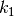 to 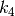 ) that control the dihedral cosine term (see eq (8)). k1 has units of kcal mol-1 , k2 and k3 are dimensionless, and k4 is in units of degrees.
A full dihedral parameter is composed from the sum of individual dihedral cosine terms. The second valid line in the dihedral mode specifies which terms are associated with which parameters, e.g
par id 3 10 32
specifies that dihedral parameter id is formed as the sum of dihedral cosine terms 3, 10 and 32. You may specify as many dihedral cosine terms on this line as you wish from 1 to MAXDIHTERMSPERDIHEDRAL (default 6). As in the bond, angle and ureybradley modes, id is a uniquely identifying number, in this case from 1 to MAXDIHPARAM (default 5000), with ID 0 referring to the special, null dihedral.
As in the case of the bond, angle and ureybradley modes, the AMBER atom set is used to associate dihedral parameters with actual dihedrals in a molecule. The final valid line associates the AMBER atom types of the four atoms in the dihedral with the dihedral parameter ID, e.g
atm amb1 amb2 amb3 amb4 id
Because dihedrals are symmetrical, amb1-amb2-amb3-amb4 is equivalent to amb4-amb3-amb2-amb1.
mode born
This mode is used to read the Generalised Born parameters that are used in the simulation. A valid line is
par id atype iborn scalefac
where atype is an AMBER/GAFF atom type, iborn is an intrinsic born radius and scalefac a scaling factor for Pairwise Descreening Approximation calculations. These parameters have been optimised to be used with the AMBER or GAFF force fields.
mode surface
This mode is used to read surface area parameters that are used in the simulation. A valid line is
par id atype radius surftens
where atype is an AMBER/GAFF atom type, radius is the radius of the atom and surftens the surface tension of this atom type, which relates the solvent accessible surface area of this atom to a non polar energy. These parameters have been optimised to be used with the AMBER or GAFF force fields.
Templates are used to assign the z-matrix and forcefield parameters to loaded molecules. Templates are read in using the template mode of the parameter / forcefield file. Different types of template are used with the different types of molecules in ProtoMS
Chain Templates
Chain templates are used to assign the z-matrix and parameters of the backbone of protein residues. The start of a new chain template is indicated by the line
chain name
where name is the name of the chain template. This name uniquely identifies this chain template. If another chain template has been loaded with this name, then this chain template will overwrite it and a message will be output to the WARNING stream.
The valid lines that comprise a chain template are
bbatom id nam par0 par1
This line identifies which are the four bbatoms of the residue. id identifies which bbatom this atom is (from 1 to 4), nam gives the name of the atom (maximum of four characters), and par0 and par1 are the CLJ parameters for this atom at = 0.0 and = 1.0, and these must refer to a valid CLJ parameter (from 0 to MAXCLJ, default 10000). Note that CLJ parameter 0 is used to assign a dummy atom. The name of the atom is the same as that given in the PDB file for the protein, and is limited to a maximum of four characters. The atom name must uniquely identify the atom within the residue, so this name must not be used elsewhere within this chain template, or in any residue templates that connect to this chain template
atom nam par0 par1 bndnam angnam dihnam
This line identifies any extra atoms that are part of the backbone. nam, par0 and par1 have the same meanings as for the bbatom line. This is a z-matrix line, and bndnam, angnam and dihnam are the names of the atoms that are the reference from which the coordinates of this atom are generated (bond, angle and dihedral atoms). Note that this line does not state that there is a bond, angle or dihedral with these atoms. This line only says that these three atoms are used to construct this extra atom. Note that the atoms in a residue are built in sequence, so the bond, angle and dihedral atoms in this line must refer to atoms that were previously listed in the chain template.
zmat nam bndval angval dihval
This line provides the default values of the internal z-matrix coordinates for the atom called nam. bndval, angval and dihval are the default values of the bond length, angle size and dihedral size. This line is optional, and is only required if you either want ProtoMS to construct this atom if it is missing from the PDB file, or if you want ProtoMS to reset bond and angles to default values.
bond nam1 nam2
This line adds a bond between atoms name nam1 and nam2. These two atom names must be present in the chain template. ProtoMS will not automatically add any bonds between atoms (except inter-residue bonds), so you must add all bonds that are present in the chain template. ProtoMS will use all of these explicitly added non-dummy bonds between atoms to generate all of the implicit angles and dihedrals within the backbone. Additional arguments may be present on this line to control the type of bond that is added, e.g.
bond nam1 nam2 dummy
adds a dummy bond between atoms nam1 and nam2. A dummy bond is really a non-bond, as it has no energy, and its presence forces ProtoMS to treat atoms nam1 and nam2 as though they were not bonded together. You can make this bond flexible by adding the flex argument to the bond line, e.g.
bond nam1 nam2 flex delta
where delta is the maximum change in the bond length attempted in a Monte Carlo move in A. Note that you can only make degrees of freedom flexible if they are used in the construction of the z-matrix, i.e. atom nam1 must be constructed via a bond with nam2, or nam2 constructed from nam1.
The forcefield parameters for this bond will normally be assigned via the AMBER atom types of the constituent atoms. It is possible to override this assignment by explicitly assigning bond parameters, e.g.
bond nam1 nam2 param par0 par1
where par0 and par1 are the bond parameter IDs for this bond at = 0.0 and = 1.0. The bond parameter IDs must refer to valid bond parameters (0 to MAXBNDPARAM, default 5000), where parameter 0 is used to refer to a null bond. You can use parameter 0 to state that two atoms are bonded, but that the energy of the bond should not be evaluated, e.g.
bond nam1 nam2 param 0 0
Angles and Urey-Bradley terms and dihedrals in the chain template are specified almost identically as for the bond line, e.g.
angle nam1 nam2 nam3
adds an angle between atoms named nam1-nam2-nam3,
ureybradley nam1 nam2 nam3
adds a Urey-Bradley term between atoms named nam1-nam2-nam3, and
dihedral nam1 nam2 nam3 nam4
adds a dihedral between atoms named nam1-nam2-nam3-nam4. dummy and param options may be added to all of these lines, and flex may be added to the angle and dihedral lines (where delta is given in units of degrees).
ProtoMS uses the bonds specified in the template to work out where all of the implicit angles and dihedrals are in the backbone. You do not need to include implicit (additional) angles or dihedrals in the template file, and you can just the template to just the flexible angles and dihedrals. However there are some cases where you would not wish an implicit angle or dihedral to be evaluated, for example the dihedral energy may only need to be evaluated via one of the dihedrals around a bond, and not via any additional dihedrals. If this is the case then you will need to add those additional dihedrals to the template and use the dummy keyword to specify that these are dummy dihedrals and that their energy should not be evaluated.
It is not possible to add multiple bonds between the same pair of atoms, or multiple angles to the same triplet of atoms etc. ProtoMS will only use the first definition of a bond, angle, dihedral or Urey-Bradley term and will ignore any further attempts to set them.
As an example, the chain template for an amino acid backbone in the middle of a chain is as follows
#
# -- HN O --
# | | | |
# res-1| --N--CA--C--|res+1
# | | |
# -- X --
#
mode template
chain aacenter
bbatom 1 N 3 3
bbatom 2 CA 6 6
bbatom 3 C 1 1
bbatom 4 O 2 2
atom HN 4 4 N CA C
zmat HN 1.010 119.8 180.0
bond O C
bond C CA
bond CA N
bond HN N
angle HN N CA flex 3.0
dihedral HN N CA C flex 3.0
# Now the parameters
mode clj
par 3 N 7 -0.570 3.250 0.170 # N, sp2 N in amide
par 6 CH 6 0.200 3.800 0.080 # CA, sp3 C with 1 H
par 1 C 6 0.500 3.750 0.105 # C, carbonyl C
par 2 O 8 -0.500 2.960 0.210 # O, carbonyl O
par 4 H 1 0.370 0.000 0.000 # HN, amide hydrogen
This shows that it can be convienient to combine the chain template with the CLJ parameters for the template into a single parameter file.
Residue Templates
Residue templates are used to assign the z-matrix and forcefield parameters for the sidechains of protein residues. The format of a residue templates is almost identical to that of a chain template.
As an example, here is the residue template for OPLS united atom alanine
# ALANINE
#
# N-CA-C
# |
# CB
#
mode template
residue ALA
info rotate 0.5 translate 1.0
backbone first aanterm middle aacenter last aacterm single aasingle
atom CB 7 7 CA N C
zmat CB 1.525 111.1 -120.0
bond CB CA
angle CB CA N flex 0.5
#parameters
mode clj
par 7 C3 6 0.000 3.910 0.160 # CB, sp3 with 3 H
The start of a new residue template is signalled by the line
residue name
where name is the name of the residue template. This name uniquely identifies the template and because residues locate templates via the residue name, the residue template name is limited to a maximum of four characters. The lines that comprise a residue template are
info rotate rotdel translate trandel
This line provides information about the residue template. The option rotate rotdel specifies that the backbone rotation move would rotate the backbone by a maximum of rotdel degrees. The option translate trandel specifies that the backbone translation move would translate the backbone by a maximum of trandel A. Both of these options are optional, and may appear in any order on this line. If these options are not given, then the default translation and rotation values are both 0.0.
backbone position chain
This line states which chain templates are associated with this residue template for different positions of the residue within the protein, e.g.
backbone first aanterm middle aacenter last aacterm single aasingle
states that this residue template uses the chain template called aanterm if this was the first residue in the protein, aacenter if this residue was in the middle of the protein, aacterm if this was the last residue in the protein, and aasingle if this was the only residue in the protein. You can place as many positions on this line as you wish, with possible positions being first, middle, last and single. You do not need to specify a chain template for every one of these positions, but ProtoMS will print a message to the WARNING stream if it needs a position that has not been specified.
The remaining lines in the residue template are the atom, zmat, bond, angle, ureybradley and dihedral lines, which have exactly the same meaning and formats as those in the chain template lines. Note that the names of atoms in the residue template must be different to those in any of its associated chain templates. Also note that you can (and indeed will have to!) refer to atoms that are present in the associated chain templates. In the example in above you can see that the only atom in the residue template is the united-atom ‘CB’, and that this is built from the ‘CA’, ‘N’ and ‘C’ atoms of its associated chain templates. This means that all of the chain templates associated with this residue template must include atoms named ‘CA’, ‘N’ and ‘C’. If these atoms don’t exist then ProtoMS will print many messages to the WARNING stream, and the simulation will fail.
ProtoMS will use the non-dummy bonds present in the residue template to find all of the implicit (additional) angles and dihedrals. If one of the bonds connect the sidechain to the backbone (one of the bonds should!), then the implicit angles and dihedrals between the sidechain and backbone will also be found. If you do not want the energy of these implicit angles and dihedrals to be evaluated then you need to specify them in the residue template with the dummy option set.
It is possible for a residue template to contain no atoms! While this may sound strange, it is necessary for residues such as glycine in united atom forcefields, or for some terminating residues (e.g. methylamine). The following example is the residue template for OPLS united atom glycine
# GLYCINE - this consists only of the glycine backbones
#
# --C--CA--N--
#
mode template
residue GLY
info rotate 0.5 translate 1.0
backbone first glynterm middle glycenter last glycterm single glysingle
# glycine has no atoms, or internals!
Solute templates
Solute templates are used to assign the z-matrix and forcefield parameters to solute molecules. An example solute template for a united atom biphenyl is shown blelow
mode template # make sure that the parameter file is being read in
# in template mode
# |
# CH3--CH2 | CH2--CH3 Biphenyl, built as two residues,
# / \ | / \ PH1 and PH2
# CH4 CH1-|-CH1 CH4
# \ / | \ / Note that each atom in a residue
# CH5--CH6 | CH6--CH5 must have a unique name but
# PH1 | PH2 that atoms in different residues
# may have the same name
solute biphenyl
info translate 1.0 rotate 5.0
# Atoms in the first, PH1 residue
#
atom CH1 PH1 20 20 DM3 DUM DM2 DUM DM1 DUM # First three atoms are built
atom CH2 PH1 20 20 CH1 PH1 DM3 DUM DM2 DUM # from the auto-generated
atom CH3 PH1 20 20 CH2 PH1 CH1 PH1 DM3 DUM # dummy atoms (DM1-DM2-DM3)
atom CH4 PH1 20 20 CH3 PH1 CH2 PH1 CH1 PH1
atom CH5 PH1 20 20 CH4 PH1 CH3 PH1 CH2 PH1
atom CH6 PH1 20 20 CH5 PH1 CH4 PH1 CH3 PH1
# Atoms in the second, PH2 residue
#
atom CH1 PH2 20 20 CH1 PH1 CH2 PH1 CH3 PH1
atom CH2 PH2 20 20 CH1 PH2 CH1 PH1 CH2 PH1
atom CH3 PH2 20 20 CH2 PH2 CH1 PH2 CH1 PH1
atom CH4 PH2 20 20 CH3 PH2 CH2 PH2 CH1 PH2
atom CH5 PH2 20 20 CH4 PH2 CH3 PH2 CH2 PH2
atom CH6 PH2 20 20 CH5 PH2 CH4 PH2 CH3 PH2
# Bonds between atoms - residue PH1
bond CH1 PH1 CH2 PH1
bond CH2 PH1 CH3 PH1
bond CH3 PH1 CH4 PH1
bond CH4 PH1 CH5 PH1
bond CH5 PH1 CH6 PH1
bond CH6 PH1 CH1 PH1
# interconnecting bond
bond CH1 PH1 CH1 PH2
# bonds in residue PH2
bond CH1 PH2 CH2 PH2
bond CH2 PH2 CH3 PH2
bond CH3 PH2 CH4 PH2
bond CH4 PH2 CH5 PH2
bond CH5 PH2 CH6 PH2
bond CH6 PH2 CH1 PH2
# only one flexible dihedral - interconnecting dihedral
dihedral CH2 PH2 CH1 PH2 CH1 PH1 CH2 PH1 flex 5.0
The format for a solute template is very similar to that of a residue template. The main difference is that while residue atoms are uniquely identified by thier atom name, solute atoms are uniquely identified by the combined atom name and residue name, e.g. the biphenyl atom CH2 PH2 is a different atom to CH2 PH1.
A new solute template is started with the line
solute name
where name is the uniquely identifying name of the solute template. As with the other templates, if a solute template with this name already exists, then it is overwritten by the new template. The name of the solute template can be any length up to 300 characters that can include spaces. Valid solute names thus include ‘biphenyl’ and ‘test ligand 132B’ Note that ProtoMS is insensitive to case, so it doesn’t matter how you capitalise the solute name as ProtoMS will ignore it. The solute names ‘biphenyl’, ‘BIPHENYL’ and ‘BiPhenyl’ are all equivalent. ProtoMS will also strip the spaces before and after the solute name, and will replace multiple spaces within the name with single spaces, e.g. ‘ test ligand 132B ’ is equivalent to ‘test ligand 132B’.
The format and meaning of the valid lines in a solute template file are very similar to those of a residue and chain template. The line
info rotate rotdel translate trandel
has exactly the same format for a solute template as it does for a residue template, and the meaning is very similar. In this case this line sets the maximum amounts that the solute molecule as a whole will be rotated and translated by, in units of A and degrees respectively. This line is optional, and it is not present then the default maximum rotation and translation amounts are both zero. Note that translation and rotation of a solute is about the location of the first automatically added dummy atom at the center of geometry of the solute.
atom nam res par0 par1 bnd bndres ang angres dih dihres
This line has a very similar meaning to the atom line of the residue and chain templates. In this case, this line identifies the solute atom called nam, in residue named res, and assigns it the CLJ parameters par0 at = 0.0 and par1 at = 1.0. The bond, angle and dihedral z-matrix atoms that are used to build this atom are the atom named bnd in residue bndres, the atom named ang in residue angres and the atom named dih in residue dihres. These z-matrix atoms must have appeared in the solute template before this atom. Note that this line does not add a bond, angle or dihedral between any of these atoms. The atom lines only specify how to move and construct the solute, not how to evaluate its energy.
bond nam1 res1 nam2 res2
This line adds a bond between solute atoms nam1 in residue res1 and nam2 in residue res2. You can make this bond flexible by using the flex keyword in the same way as described for the chain and residue templates (as long as this bond is used in one of the atom z-matrix lines to construct one of the atoms). You can also use the same dummy keyword as the chain and residue templates to turn this into a dummy bond. As in those cases, a dummy bond is a non-bond, and has the effect of stating that the two atoms are not bonded together. The forcefield parameters for this bond are obtained via the AMBER types of the two solute atoms. However these parameters may be overridden through the use of the param keyword as used in the chain and residue templates, e.g.
bond nam1 res1 nam2 res2 param par0 par1
This line states that this bond uses bond parameter par0 at = 0.0 and bond parameter par1 at = 1.0. The angles, Urey Bradley terms and dihedrals in the solute are specified in a very similar manner
angle nam1 res1 nam2 res2 nam3 res3
ureybradley nam1 res1 nam2 res2 nam3 res3
dihedral nam1 res1 nam2 res2 nam3 res3 nam4 res4
the dummy, flex and param options may be used with these lines, with the exception of the ureybradley line, which cannot use the flex option. ProtoMS only uses the bonds listed in the solute template to work out which atoms are bonded together. ProtoMS does not try to guess which atoms are bonded together, so you will need to add all bonds that exist in the solute to the template file to ensure that the intramolecular energy is calculated correctly. ProtoMS will use these explicitly added, non-dummy bonds to work out all of the implicit (additional) angles and dihedrals in the solute. You do not need to include any additional angles or dihedrals in the solute template as they are added automatically by ProtoMS. If you do not want the energy of an additional angle or dihedral to be evaluated then you will need to add it to the template with the dummy option set. This is the same behaviour as in the chain and residue templates.
Solute templates have one extra type of valid line compared to chain or residue templates. This line is used to describe how the geometry of the solute changes with
variable nam res type val0 val1
nam and res are the name and residue of the atom that changes geometry with . typ can be either bond, angle or dihedral and describes whether the bond, angle or dihedral changes with , with val0 giving its value at = 0.0 and val1 giving its value at = 1.0. These variable geometry lines are very useful for free energy calculations where an atom is being ‘switched off’ by turning it into a dummy atom. You can use the variable geometry line to shrink the bond length to its z-matrix bonded atom, thus having the effect of pulling it within the van der waals sphere of the bonded atom. This prevents instabilities that may arise when the atom is close to being fully switched off.
Another use for variable geometry lines is to perform free energy calculations along structural coordinates, e.g. pulling two molecules apart. You can perform these sorts of calculations in ProtoMS by loading both molecules as a single solute, with no bonds between the two molecules. You could then use a variable geometry line to change the distance between the two molecules with respect to .
Yet another use of geometry variation is to calculate the energy along an internal degree of freedom, e.g. by performing a torsion drive for the purposes of generating a dihedral forcefield parameter.
While may be used to change the forcefield parameters of any atom of any molecule in the entire system, only solutes may have their geometry changed with respect to . This is because geometry variations are implemented by making two copies of the solute and using these to shadow the original, reference solute. While you will not see these shadow solutes, they will reduce the number of solutes that you can load by two for every solute of variable geometry that you load. This means that while you can load a maximum of 50 solutes, you can only load a maximum of 16 solutes that have variable geometry.
Solvent Templates
Solvent molecules are implemented as rigid molecules in ProtoMS, so they do not require a z-matrix, nor do they have any internal degrees of freedom or energy terms. Solvent templates are thus much more simple than chain, residue and solute templates as they are only used to assign the forcefield parameters of the solvent molecules. An example solvent template for TIP4P water is shown in below
#
# TIP4P (T4P)
#
# O00 dist(OH) = 0.9572 A
# / | \ dist(OM) = 0.15 A
# H01 M03 H02 ang(HOH) = 104.52 deg
#
mode clj
par 2003 OW 8 0.000 3.15363 0.1550
par 2004 HW 1 0.520 0.0 0.0
par 2005 ?? 0 -1.040 0.0 0.0
mode template
solvent T4P
info translate 0.15 rotate 15.0
atom O00 2003 2003
atom H01 2004 2004
atom H02 2005 2005
atom M03 2006 2006
A new solvent template is signified by the line
solvent name
where name is the uniquely identifying name of the solvent template. As in the cases of the other templates, if a solvent template with this name has been previously loaded, then it is overwritten. Solvent molecules are named using the residue name column from the PDB file, so the solvent name is limited to four characters. There are only two types of line that are valid within a solvent template. These are an info line, that has the same meaning as that in the solute templates, and
atom nam par0 par1
which states that the solvent atom called nam has CLJ parameters par0 at = 0.0 and par1 at = 1.0. The file solvents.ff in the parameter directory contains the solvent templates for a large number of standard solvents. All of the CLJ parameters used in this file range from 2001 to 2999.
GCsolute Templates
GCsolute molecules are implemented as rigid molecules in ProtoMS, like solvents, so they do not require a z-matrix, nor do they have any internal degrees of freedom or energy terms. GCsolutes templates are thus much more simple than chain, residue and solute templates as they are only used to assign the forcefield parameters of the GCsolute molecules. An example GCsolute template for TIP4Pg water is shown below
mode template
grand WAT
info translate 0.15 rotate 15
atom O00 8003 8003
atom H01 8004 8004
atom H02 8004 8004
atom M03 8005 8005
mode clj
#parameter atm proton-num charge(|e|) sigma(A) epsilon(kcal mol-1)
par 8003 OW 8 0.000 3.15363 0.1550
par 8004 HW 1 0.520 0.0 0.0
par 8005 ?? 0 -1.040 0.0 0.0
A new GCsolute template is signified by the line
grand name
where name is the uniquely identifying name of the GCsolute template. As in the cases of the other templates, if a GCsolute template with this name has been previously loaded, then it is overwritten. GCsolute molecules are named using the residue name column from the PDB file, so the name is limited to four characters. There are only two types of line that are valid within a GCsolute template. These are an info line, that has the same meaning as that in the solute templates, and :
atom nam par0 par1
which states that the GCsolute atom called nam has CLJ parameters par0 at = 0.0 and par1 at = 1.0. GCsolute templates should have values of CLJ parameters used in the files ranging from 8001 to 8999.
Proteins are loaded from protein files. The names of the protein files are specified using the proteinN command described in section Specifying input files. The protein file is just a standard PDB format file. The name of the protein contained within this file is taken from the HEADER line of the PDB. e.g.:
HEADER p38 kinase
The protein name may contain spaces, though ProtoMS will strip any spaces before or after the name, and will collapse multiple spaces into a single space (much like it does with the solute name).
ProtoMS tries to follow the PDB format when it reads in PDB lines (see http://www.rcsb.org/pdb/docs/format/pdbguide2.2/guide2.2 frame.html). Atom names and coordinates are given on lines that start with ATOM or HETATM. As with the rest of ProtoMS, the capitalisation of these keywords is not important. Unlike the rest of ProtoMS, these lines have a strict format with respect to in which column each piece of data is recorded.
ProtoMS constructs the protein chain from the residue order that it reads in from the PDB file. This means that if a protein file contains residues numbered 5, 10 and 2, in that order, then ProtoMS will construct a protein chain with the sequence 5-10-2. ProtoMS will not try to be clever and numerically order your residues for you! One requirement when loading a protein PDB is that all atoms that are part of a residue are together within the PDB file. It is not possible to scatter atoms from one residue throughout the entire PDB file. In addition, all residues in the protein must have a unique residue number, and all atoms within the same residue must have unique names. ProtoMS loads the protein and assigns residue templates based on the residue names that it finds in the PDB filele. If ProtoMS cannot find a residue template that matches the residue name then it prints a message to the WARNING stream and then skips the residue. ProtoMS will use the residue and chain templates that it finds to work out which atom names should be present in the residue. If the PDB file provides an atom that matches the atom name, then ProtoMS assigns that atom from the template. If the PDB file does not provide an atom that matches the name, then if the atom name corresponds to one of the required bbatoms, then ProtoMS will print a severe message to the WARNING stream and will then skip the residue. If the missing atom is not a bbatom, then if the residue or chain templates provide zmat information for that atom then the coordinates for the atom are constructed automatically (and a message output to the WARNING stream). If no zmat information is available for this atom, then it is skipped and a severe message is output to the WARNING stream. Finally, if the PDB file provides an atom that is not part of the template, then that atom is skipped.
ProtoMS can only read a single protein chain from a PDB file. This means that you must split multi-chain PDB files into several files, and that PDBs using the ‘A’ or ‘B’ chain notation will be read incorrectly. If ProtoMS reads TER line, then it will print a message to the WARNING stream, and will then skip the rest of the PDB file. ProtoMS is capable of reading a wide variety of PDB files, and of fixing many of the errors that it encounters. Despite this, I would recommend that you do not just use a PDB direct from the databank, but that you first preprocess the PDB with another software package to ensure that the PDB is correct, and that polar hydrogens and titratable residues are included correctly.
Solute input files are very similar to protein input files. Solute files are standard PDB format coordinate files. The name of the solute is read from the HEADER line in an identical manner to the name of a protein, e.g.:
header biphenyl
The solute name is used to locate the solute template, which is used to assign the z-matrix and forcefield parameters of the solute.
The solute PDB file has the same format as a standard PDB, with the requirements that all atoms belonging to a residue are together in the PDB, that each residue name is unique, and that all atom names within a residue are unique.
As is the case for protein files, ProtoMS will only read a single solute from each solute PDB file, and will skip the rest of the solute PDB if it encounters a TER line. It is intended that a future version of ProtoMS will remove this restriction.
ProtoMS will use the solute name to find the solute template for this molecule, and will then try to locate each atom from the template within the PDB file. If the atom does not exist then ProtoMS can automatically build the missing atom as long as its zmat information has been provided. If ProtoMS cannot build the atom then it skips it, after writing severe messages to the WARNING stream. If the PDB contains atoms that are not listed in the template then these atoms are ignored.
GCsolute input files are very similar to protein input files, except that multiple GCsolutes can be loaded at once. GCsolute files are standard PDB format coordinate files. The name of each solvent molecule is taken from the residue name, and it is this name that is used to locate the template for each GCsolute molecule.
Solvent input files are very similar to protein and solute input files. Solvent files are standard PDB format coordinate files. Unlike the protein and solute files, many solvent molecules may be contained within each solvent input file. The name of each solvent molecule is taken from the residue name, and it is this name that is used to locate the template for each solvent molecule. ProtoMS will then try to locate each atom from the template within the PDB file. If the atom cannot be found then ProtoMS will write a severe message to the WARNING stream and will skip that atom. If the PDB contains atoms that are not part of the template then they are skipped. Note that ProtoMS will take the coordinates of the solvent molecule from the PDB file and will make no attempt to ensure that the internal geometry of the solvent molecule is correct for the template model (e.g. that TIP4P water has an O-H bond length of 0.9572 A).
If multiple solvent files are loaded, then the solvents from the newer files are appended onto the list of solvents loaded from the previous file. If solvent file 1 contains 340 solvent molecules, and solvent file 2 contains 10 solvent molecules, then the solvents from file 1 will be loaded as solvent molecules 1-340, and those from solvent file 2 will be loaded as solvent molecules 341-350.
Boundary conditions
As well as containing the coordinates of the solvent molecules, the solvent file may be used to specify the parameters needed for the boundary conditions. To do this, the solvent file must include a HEADER line that has one of the following formats
HEADER box dimx dimy dimz
This states that the solvent file contains a box of solvent of dimensions dimx A by dimy A by dimz A, with the box centered on the origin. Note that ProtoMS will not check to see if this information is correct, so you will need to ensure that that no solvent molecules lie outside of this box.
HEADER box ox oy oz tx ty tz
This states that the solvent file contains a box of solvent with the bottom-left-back corner located at coordinates (ox,`oy`,`oz`) A and the top-right-front corner located at coordinates (tx,`ty`,`tz`) A. Again ProtoMS will not check that this information is accurate!
HEADER cap ox oy oz rad k
This states that the solvent file contains solvent molecules restrained to be within a spherical cap of radius rad A, centered at coordinates (ox,`oy`,`oz`) A, using a half-harmonic force constant of k kcal mol-1 A -2 . ProtoMS will not check to see whether or not this information is accurate.
Only one HEADER line may be included in each solvent file. How ProtoMS interprets these HEADER lines depends on which boundary conditions had been set for the simulation.
4. If ‘solvent’ boundaries had been set for the simulation then the boundaries used will be those obtained from the first solvent file that is loaded that contains a HEADER line. If none of the loaded solvent files contain a HEADER line then a warning is printed and no boundary conditions are used. Note that by default ‘solvent’ boundaries are set for all simulations. Warnings are printed if solvent files contain conflicting boundary types (e.g. specifying a box when a spherical solvent cap is used), or if multiple solvent files supply solvent cap parameters. If multiple solvent files supply solvent box dimensions then the box is increased to the minimum size necessary to encompass all of the solvent boxes.
To make things simple, I recommend that you use one solvent file to describe your boundary conditions, and use the default option of specifying solvent boundaries via the solvent file (use boundary solvent in your command file, or do not supply a boundary value as solvent is the default).
ProtoMS will print out the boundary dimension to any output PDB file if that file contains solvent molecules.
The restart file is used to save the coordinates of the entire system to a high precision such that they can be loaded up at a future point, or by another ProtoMS simulation. The format of the restart file is not yet fixed, so unfortunately there is the possibility that different versions of ProtoMS may not be able to read each other’s restart files. This is considered a bug, and it is a development aim to stabilise the restart file format.
The restart file has deliberately been written as a human-readable text file. This means that the restart file is larger than it could be, but that it should be possible to manually edit a restart file, and understand its contents. If you wish to save space then I recommend that you compress the restart file via bzip2 or gzip. While the restart file is human-readable and editable, I recommend that you do not attempt to change the restart file unless you have a good understanding of the writerestart.F and readrestart.F source files that are used by ProtoMS to read and write them.
The restart file only contains the coordinates of the entire system and the parameters needed for the boundary conditions. This file does not contain energies or energy averages, as these are output via the RESULTS stream. The restart file does not contain information about the connectivity or setup of the system as these are contained in the command file and the protein, solute, solvent and parameter files.
You can write a restart file at any point during your simulation, and you can write as many restart files as you wish. This means that you can start your simulation with a bit of equilibration, and write a restart file for the final equilibrated configuration, and then run some production. This is a strategy used by many of the examples in the next chapter.
You can read a restart file at any point during your simulation, and you can read restart files as many times as you desire during a simulation. A restart file merely resets the coordinates of the system to those saved when the restart file was written. This means that you could run multiple chunks of a simulation from the same equilibrated configuration by reading in a restart file from the equilibrated configuration before performing each chunk of production. Note that you can only read a restart file into the same system that was used to write that restart file. If you try to load an incompatible restart file then the program will print lots of warnings and will probably close down!

{kind=link}
{kind=link}